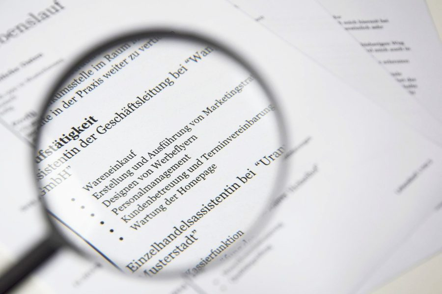
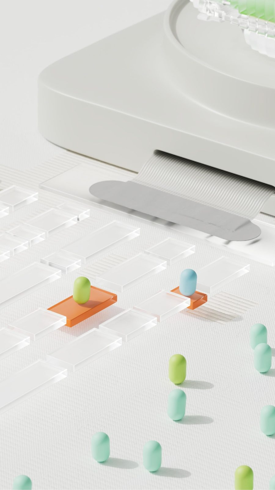

Aholkuak
Lanbide Heziketako praktikak aurkitzeko aholkuak
2026ko urtarrilaren 12a (data fikziozkoa)
Hasi goiz, zehaztu zer bilatzen duzun eta erabili eskura dituzun bideak.
Artikuluak
Aholkuak
2026ko urtarrilaren 12a (data fikziozkoa)
Hasi goiz, zehaztu zer bilatzen duzun eta erabili eskura dituzun bideak.

Curriculuma
2026ko otsailaren 3a (data fikziozkoa)
Egitura garbia, gaitasunak eta prestakuntza: zer jarri eta zer utzi kanpoan.

Teknologia
2026ko martxoaren 18a (data fikziozkoa)
IAk nola laguntzen duen eskaintzak aurkitzen eta mezu pertsonalizatuak prestatzen.
Hezkuntza
2026ko apirilaren 9a (data fikziozkoa)
Praktikak ikasketak eta lan-mundua lotzen dituen zubia dira.